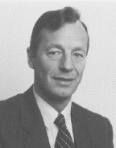
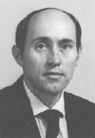
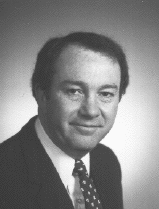
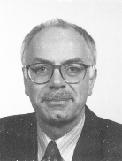
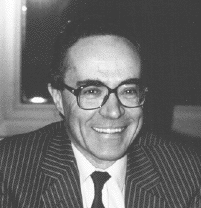

![[Oslonett Home]](/graphics/home.gif)
![[Oslonett Markedsplassen]](/graphics/market.gif)

Master of Business Administration from Copenhagen Graduate School of Economics and Human Relations in Business and industry, California State University.
Thirty years in marketing and Executive positions in the leading Norwegian industrial companies.
President, overall responsibility for the planning and execution of the 1994 Lillehammer Olympic Games.

Doctor of science in Engineering Administration, George Washington University, Master of Business Administration, University of West Florida
US Department of Energy, Oak Ridge Tennessee, Review of Large Scale Energy Projects
Civilian Engineer with US Air Force, Eglin Air Force Base
Active duty Eglin Air Force Base.

Graduate Degree in Business Administration, North Eastern University and Executive Development Program, Columbia University.
Directs all business planning and product planning Small Car Platform Vehicles including Sundance, Shadow, Le Baron, Neon, Viper and future small car products.
Marketing and managerial positions in Ford Motor Co. and Plymouth.

Graduate Degree in Economy and Business Administration from Cologne and Frankfurt.
Established Commerzbank's National and International real estate fund business.
Established Commerzbank Project Finance Department and has during the latter years developed extensive financial advisory services to large-scale projects in the European Infrastructure and Industrial sectors.
Partner, Management Consultancy Practice Coopers & Lybrand, London, UK

Civil Engineer with doctorate for research into the Financial Control of Construction Projects.
He is an expert on project management and is a pioneer in bringing human factors into the subject. He is Chairman of the Council of Delegates of INTERNET.
His work in Coopers & Lybrand has included advising many International organizations on improving project management and broadening its application.